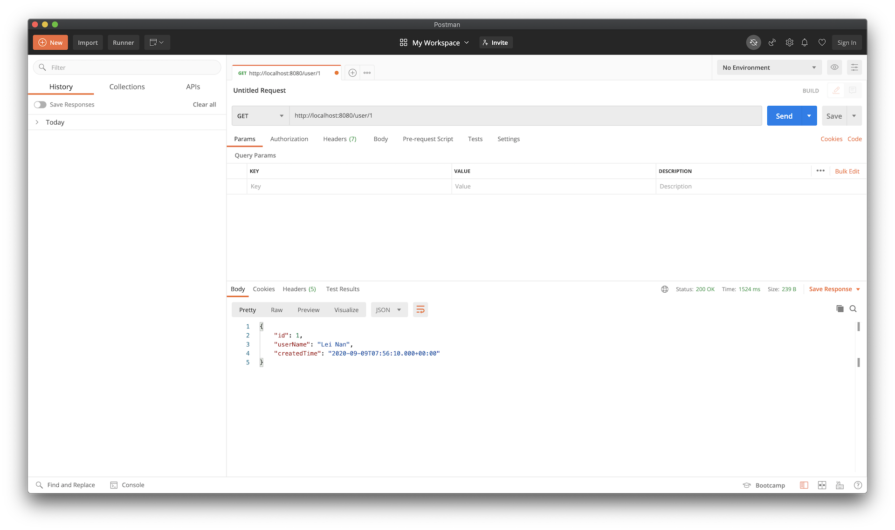
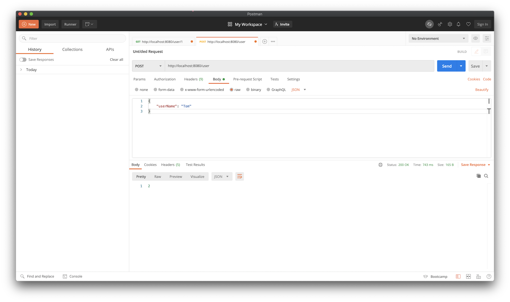

Shardingsphere master-slave with MySQL
App 示例 - 使用ShardingSphere连接MySQL主从库
1. 构建MySQL主从库¶
具体方法请点击参考文档
2. ShardingSphere¶
Apache ShardingSphere 是一套开源的分布式数据库中间件解决方案，可以参考官方文档，更多内容也可查询官方网站
本示例使用的数据库方案是MySQL一主二从读写分离(即主库负责写，从库负责读，从库使用Binlog进行实时同步)。
使用ShardingSphere中间件的目的在于其帮助我们实现在主从库之间的转换，而程序中无需指定读写操作的数据库。
3. 代码示例¶
3.1 引入依赖¶
Spring Boot的版本为2.3.2.RELEASE，ShardingSphere的版本为4.1.1
同时加入MySQL的数据库驱动和MyBatis的starter
参考如下配置：
<dependencies>
<dependency>
<groupId>org.springframework.boot</groupId>
<artifactId>spring-boot-starter-web</artifactId>
<version>2.3.2.RELEASE</version>
</dependency>
<dependency>
<groupId>org.springframework.boot</groupId>
<artifactId>spring-boot-starter-jdbc</artifactId>
<version>2.3.2.RELEASE</version>
</dependency>
<dependency>
<groupId>org.apache.shardingsphere</groupId>
<artifactId>sharding-jdbc-spring-boot-starter</artifactId>
<version>4.1.1</version>
</dependency>
<dependency>
<groupId>com.alibaba</groupId>
<artifactId>druid</artifactId>
<version>1.1.23</version>
</dependency>
<dependency>
<groupId>mysql</groupId>
<artifactId>mysql-connector-java</artifactId>
<version>8.0.21</version>
</dependency>
<dependency>
<groupId>org.mybatis.spring.boot</groupId>
<artifactId>mybatis-spring-boot-starter</artifactId>
<version>2.1.3</version>
</dependency>
</dependencies>
3.2 Spring Boot配置¶
spring.shardingsphere就是ShardingSphere配置的起始头，数据库使用的是一主二从，即配置datasource时直接指明names: master, slave1, slave2
继续给每个数据源配置相关信息即可(这里的从库用户mysql只有select权限)
配置好数据源信息，继续设置ShardingSphere的主从配置spring.shardingsphere.masterslave信息，指定主库的name和从库的name，还有负载平衡算法，这里设置的round_robin表示轮询
配置完ShardingSphere，继续配置MyBatis，指定出mapper和config的加载路径即可
参考如下配置：
server:
port: 8080
spring:
shardingsphere:
datasource:
names: master,slave1,slave2
master:
type: com.alibaba.druid.pool.DruidDataSource
driver-class-name: com.mysql.cj.jdbc.Driver
url: jdbc:mysql://39.105.58.106:33306/demo
username: root
password: root
# druid:
# initial-size: 5
# max-active: 10
# min-idle: 5
# max-wait: 60000
# time-between-eviction-runs-millis: 120000
# min-evictable-idle-time-millis: 300000
# validation-query: SELECT 1
# test-while-idle: true
slave1:
type: com.alibaba.druid.pool.DruidDataSource
driver-class-name: com.mysql.cj.jdbc.Driver
url: jdbc:mysql://39.105.58.106:33307/demo
username: mysql
password: mysql
# druid:
# initial-size: 5
# max-active: 10
# min-idle: 5
# max-wait: 60000
# time-between-eviction-runs-millis: 120000
# min-evictable-idle-time-millis: 300000
# validation-query: SELECT 1
# test-while-idle: true
slave2:
type: com.alibaba.druid.pool.DruidDataSource
driver-class-name: com.mysql.cj.jdbc.Driver
url: jdbc:mysql://39.105.58.106:33308/demo
username: mysql
password: mysql
# druid:
# initial-size: 5
# max-active: 10
# min-idle: 5
# max-wait: 60000
# time-between-eviction-runs-millis: 120000
# min-evictable-idle-time-millis: 300000
# validation-query: SELECT 1
# test-while-idle: true
masterslave:
name: ms
master-data-source-name: master
slave-data-source-names: slave1, slave2
load-balance-algorithm-type: round_robin
props:
sql:
show: true
mybatis:
mapperLocations: classpath:mybatis/**/*Mapper.xml
configLocation: classpath:mybatis/mybatis-config.xml
3.3 数据模型和MyBatis配置¶
演示使用的简单数据模型为
CREATE TABLE `USERS` (
`ID` bigint NOT NULL AUTO_INCREMENT,
`USER_NAME` varchar(100) NOT NULL,
`CREATED_TIME` datetime NOT NULL,
PRIMARY KEY (`ID`)
)
MyBatis的配置如下：
<?xml version="1.0" encoding="UTF-8" ?>
<!DOCTYPE configuration
PUBLIC "-//mybatis.org//DTD Config 3.0//EN"
"http://mybatis.org/dtd/mybatis-3-config.dtd">
<configuration>
<settings>
<setting name="cacheEnabled" value="true"/> <!-- 全局映射器启用缓存 -->
<setting name="useGeneratedKeys" value="true"/> <!-- 允许 JDBC 支持自动生成主键 -->
</settings>
<typeAliases>
<typeAlias type="sharding.sphere.demo.entity.User" alias="User"/>
</typeAliases>
</configuration>
其中User.java定义为：
package sharding.sphere.demo.entity;
import java.util.Date;
public class User {
private Long id;
private String userName;
private Date createdTime;
public Long getId() {
return id;
}
public void setId(Long id) {
this.id = id;
}
public String getUserName() {
return userName;
}
public void setUserName(String userName) {
this.userName = userName;
}
public Date getCreatedTime() {
return createdTime;
}
public void setCreatedTime(Date createdTime) {
this.createdTime = createdTime;
}
}
MyBatis的mapper定义为：
<?xml version="1.0" encoding="UTF-8" ?>
<!DOCTYPE mapper
PUBLIC "-//mybatis.org//DTD Mapper 3.0//EN"
"http://mybatis.org/dtd/mybatis-3-mapper.dtd">
<mapper namespace="sharding.sphere.demo.mapper.UserMapper">
<resultMap id="userResult" type="User">
<id property="id" column="ID"/>
<result property="userName" column="USER_NAME"/>
<result property="createdTime" column="CREATED_TIME"/>
</resultMap>
<select id="listUsers" resultMap="userResult">
SELECT * FROM USERS
LIMIT #{start}, #{limit}
</select>
<select id="getUserById" resultMap="userResult">
SELECT *
FROM USERS
WHERE ID = #{id}
</select>
<insert id="insertUser" parameterType="User">
INSERT INTO
USERS(USER_NAME,CREATED_TIME)
VALUES (#{user.userName}, now())
</insert>
<delete id="deleteUser" parameterType="User">
DELETE FROM USERS
WHERE ID = #{user.id}
</delete>
</mapper>
对应的Mapper类：
package sharding.sphere.demo.mapper;
import org.apache.ibatis.annotations.Mapper;
import org.apache.ibatis.annotations.Param;
import sharding.sphere.demo.entity.User;
import java.util.List;
@Mapper
public interface UserMapper {
List<User> listUsers(@Param("start") int start, @Param("limit") int limit);
User getUserById(@Param("id") long id);
int insertUser(@Param("user") User user);
int deleteUser(@Param("user") User user);
}
3.4 编写业务代码¶
示例代码仅包含按ID获取User信息、增加User两个功能：
package sharding.sphere.demo.service.impl;
import org.apache.shardingsphere.api.hint.HintManager;
import org.springframework.beans.factory.annotation.Autowired;
import org.springframework.stereotype.Service;
import sharding.sphere.demo.entity.User;
import sharding.sphere.demo.mapper.UserMapper;
import sharding.sphere.demo.service.UserService;
@Service
public class UserServiceImpl implements UserService {
@Autowired
private UserMapper userMapper;
@Override
public User getUserById(Long id) {
return userMapper.getUserById(id);
}
@Override
public int insertUser(User user) {
return userMapper.insertUser(user);
}
}
编写API接口：
package sharding.sphere.demo.controller;
import org.springframework.beans.factory.annotation.Autowired;
import org.springframework.web.bind.annotation.*;
import sharding.sphere.demo.entity.User;
import sharding.sphere.demo.service.UserService;
@RestController
public class UserController {
@Autowired
private UserService userService;
@GetMapping(value = "/user/{id}")
public User getUserById(@PathVariable("id") Long id) {
return userService.getUserById(id);
}
@PostMapping(value = "/user", consumes = "application/json", produces = "application/json")
public Long insertUser(@RequestBody User user) {
userService.insertUser(user);
return user.getId();
}
}
引导类：
package sharding.sphere.demo;
import org.springframework.boot.SpringApplication;
import org.springframework.boot.autoconfigure.SpringBootApplication;
@SpringBootApplication
public class ShardingSphereDemoApp {
public static void main(String[] args) {
SpringApplication.run(ShardingSphereDemoApp.class, args);
}
}
4. 运行示例¶
直接运行引导类，启动项目：
. ____ _ __ _ _
/\\ / ___'_ __ _ _(_)_ __ __ _ \ \ \ \
( ( )\___ | '_ | '_| | '_ \/ _` | \ \ \ \
\\/ ___)| |_)| | | | | || (_| | ) ) ) )
' |____| .__|_| |_|_| |_\__, | / / / /
=========|_|==============|___/=/_/_/_/
:: Spring Boot :: (v2.3.2.RELEASE)
2020-09-09 22:06:42.925 INFO 7602 --- [ main] s.sphere.demo.ShardingSphereDemoApp : Starting ShardingSphereDemoApp on nanleis-MacBook-Pro.local with PID 7602 (/Users/nanlei/Dev/Codebase/deep-in-spring-boot/sharding-sphere-demo/target/classes started by nanlei in /Users/nanlei/Dev/Codebase/deep-in-spring-boot)
2020-09-09 22:06:42.927 INFO 7602 --- [ main] s.sphere.demo.ShardingSphereDemoApp : No active profile set, falling back to default profiles: default
2020-09-09 22:06:43.677 INFO 7602 --- [ main] trationDelegate$BeanPostProcessorChecker : Bean 'stringToNoneShardingStrategyConfigurationConverter' of type [org.apache.shardingsphere.spring.boot.converter.StringToNoneShardingStrategyConfigurationConverter] is not eligible for getting processed by all BeanPostProcessors (for example: not eligible for auto-proxying)
2020-09-09 22:06:43.686 INFO 7602 --- [ main] trationDelegate$BeanPostProcessorChecker : Bean 'spring.shardingsphere.sharding-org.apache.shardingsphere.shardingjdbc.spring.boot.sharding.SpringBootShardingRuleConfigurationProperties' of type [org.apache.shardingsphere.shardingjdbc.spring.boot.sharding.SpringBootShardingRuleConfigurationProperties] is not eligible for getting processed by all BeanPostProcessors (for example: not eligible for auto-proxying)
2020-09-09 22:06:43.694 INFO 7602 --- [ main] trationDelegate$BeanPostProcessorChecker : Bean 'spring.shardingsphere.masterslave-org.apache.shardingsphere.shardingjdbc.spring.boot.masterslave.SpringBootMasterSlaveRuleConfigurationProperties' of type [org.apache.shardingsphere.shardingjdbc.spring.boot.masterslave.SpringBootMasterSlaveRuleConfigurationProperties] is not eligible for getting processed by all BeanPostProcessors (for example: not eligible for auto-proxying)
2020-09-09 22:06:43.696 INFO 7602 --- [ main] trationDelegate$BeanPostProcessorChecker : Bean 'spring.shardingsphere.encrypt-org.apache.shardingsphere.shardingjdbc.spring.boot.encrypt.SpringBootEncryptRuleConfigurationProperties' of type [org.apache.shardingsphere.shardingjdbc.spring.boot.encrypt.SpringBootEncryptRuleConfigurationProperties] is not eligible for getting processed by all BeanPostProcessors (for example: not eligible for auto-proxying)
2020-09-09 22:06:43.700 INFO 7602 --- [ main] trationDelegate$BeanPostProcessorChecker : Bean 'spring.shardingsphere.shadow-org.apache.shardingsphere.shardingjdbc.spring.boot.shadow.SpringBootShadowRuleConfigurationProperties' of type [org.apache.shardingsphere.shardingjdbc.spring.boot.shadow.SpringBootShadowRuleConfigurationProperties] is not eligible for getting processed by all BeanPostProcessors (for example: not eligible for auto-proxying)
2020-09-09 22:06:43.702 INFO 7602 --- [ main] trationDelegate$BeanPostProcessorChecker : Bean 'spring.shardingsphere-org.apache.shardingsphere.shardingjdbc.spring.boot.common.SpringBootPropertiesConfigurationProperties' of type [org.apache.shardingsphere.shardingjdbc.spring.boot.common.SpringBootPropertiesConfigurationProperties] is not eligible for getting processed by all BeanPostProcessors (for example: not eligible for auto-proxying)
2020-09-09 22:06:43.918 INFO 7602 --- [ main] trationDelegate$BeanPostProcessorChecker : Bean 'org.apache.shardingsphere.shardingjdbc.spring.boot.SpringBootConfiguration' of type [org.apache.shardingsphere.shardingjdbc.spring.boot.SpringBootConfiguration$$EnhancerBySpringCGLIB$$e7dff249] is not eligible for getting processed by all BeanPostProcessors (for example: not eligible for auto-proxying)
2020-09-09 22:06:44.242 INFO 7602 --- [ main] o.s.b.w.embedded.tomcat.TomcatWebServer : Tomcat initialized with port(s): 8080 (http)
2020-09-09 22:06:44.255 INFO 7602 --- [ main] o.apache.catalina.core.StandardService : Starting service [Tomcat]
2020-09-09 22:06:44.255 INFO 7602 --- [ main] org.apache.catalina.core.StandardEngine : Starting Servlet engine: [Apache Tomcat/9.0.37]
2020-09-09 22:06:44.341 INFO 7602 --- [ main] o.a.c.c.C.[Tomcat].[localhost].[/] : Initializing Spring embedded WebApplicationContext
2020-09-09 22:06:44.341 INFO 7602 --- [ main] w.s.c.ServletWebServerApplicationContext : Root WebApplicationContext: initialization completed in 1263 ms
2020-09-09 22:06:44.660 INFO 7602 --- [ main] com.alibaba.druid.pool.DruidDataSource : {dataSource-1} inited
2020-09-09 22:06:45.364 INFO 7602 --- [ main] com.alibaba.druid.pool.DruidDataSource : {dataSource-2} inited
2020-09-09 22:06:45.811 INFO 7602 --- [ main] com.alibaba.druid.pool.DruidDataSource : {dataSource-3} inited
2020-09-09 22:06:46.292 INFO 7602 --- [ main] o.a.s.core.log.ConfigurationLogger : MasterSlaveRuleConfiguration:
loadBalanceAlgorithmType: round_robin
masterDataSourceName: master
name: ms
slaveDataSourceNames:
- slave1
- slave2
2020-09-09 22:06:46.293 INFO 7602 --- [ main] o.a.s.core.log.ConfigurationLogger : Properties:
sql.show: 'true'
2020-09-09 22:06:46.429 INFO 7602 --- [ main] ShardingSphere-metadata : Loading 1 tables' meta data.
2020-09-09 22:06:46.583 INFO 7602 --- [ main] ShardingSphere-metadata : Meta data load finished, cost 290 milliseconds.
2020-09-09 22:06:46.935 INFO 7602 --- [ main] o.s.s.concurrent.ThreadPoolTaskExecutor : Initializing ExecutorService 'applicationTaskExecutor'
2020-09-09 22:06:47.170 INFO 7602 --- [ main] o.s.b.w.embedded.tomcat.TomcatWebServer : Tomcat started on port(s): 8080 (http) with context path ''
2020-09-09 22:06:47.186 INFO 7602 --- [ main] s.sphere.demo.ShardingSphereDemoApp : Started ShardingSphereDemoApp in 4.612 seconds (JVM running for 5.065)
可以看到DruidDataSource初始化了3个对象，对应master，slave1和slave2。
首先在数据库master中添加一个User:
insert into USERS(USER_NAME,CREATED_TIME) values('Lei Nan', now());
访问接口/user/{id}：

日志输出为：
2020-09-09 22:06:52.656 INFO 7602 --- [nio-8080-exec-1] ShardingSphere-SQL : Logic SQL: SELECT *
FROM USERS
WHERE ID = ?
2020-09-09 22:06:52.657 INFO 7602 --- [nio-8080-exec-1] ShardingSphere-SQL : SQLStatement: SelectStatementContext(super=CommonSQLStatementContext(sqlStatement=org.apache.shardingsphere.sql.parser.sql.statement.dml.SelectStatement@3528a95f, tablesContext=org.apache.shardingsphere.sql.parser.binder.segment.table.TablesContext@4b2481ee), tablesContext=org.apache.shardingsphere.sql.parser.binder.segment.table.TablesContext@4b2481ee, projectionsContext=ProjectionsContext(startIndex=7, stopIndex=7, distinctRow=false, projections=[ShorthandProjection(owner=Optional.empty, actualColumns=[ColumnProjection(owner=null, name=id, alias=Optional.empty), ColumnProjection(owner=null, name=user_name, alias=Optional.empty), ColumnProjection(owner=null, name=created_time, alias=Optional.empty)])]), groupByContext=org.apache.shardingsphere.sql.parser.binder.segment.select.groupby.GroupByContext@1a02bfb, orderByContext=org.apache.shardingsphere.sql.parser.binder.segment.select.orderby.OrderByContext@4567ed4b, paginationContext=org.apache.shardingsphere.sql.parser.binder.segment.select.pagination.PaginationContext@35f5c6e9, containsSubquery=false)
2020-09-09 22:06:52.657 INFO 7602 --- [nio-8080-exec-1] ShardingSphere-SQL : Actual SQL: slave1 ::: SELECT *
FROM USERS
WHERE ID = ?
再次执行时：
2020-09-09 22:09:30.725 INFO 7602 --- [nio-8080-exec-5] ShardingSphere-SQL : Actual SQL: slave2 ::: SELECT *
FROM USERS
WHERE ID = ?
可以看到slave1和slave2是轮询查找的
通过API增加User:

日志输出为：
2020-09-09 23:26:35.559 INFO 8499 --- [nio-8080-exec-2] ShardingSphere-SQL : Logic SQL: INSERT INTO
USERS(USER_NAME,CREATED_TIME)
VALUES (?, now())
2020-09-09 23:26:35.560 INFO 8499 --- [nio-8080-exec-2] ShardingSphere-SQL : SQLStatement: CommonSQLStatementContext(sqlStatement=org.apache.shardingsphere.sql.parser.sql.statement.dml.InsertStatement@5534efa9, tablesContext=org.apache.shardingsphere.sql.parser.binder.segment.table.TablesContext@6933988a)
2020-09-09 23:26:35.560 INFO 8499 --- [nio-8080-exec-2] ShardingSphere-SQL : Actual SQL: master ::: INSERT INTO
USERS(USER_NAME,CREATED_TIME)
VALUES (?, now())
新增操作自动使用master主库
如果查询操作强行使用master主库，可以如下进行：
@Override
public User getUserById(Long id) {
if (id == 2) {
HintManager.getInstance().setMasterRouteOnly();
}
return userMapper.getUserById(id);
}
执行GET /user/2时，日志输出为：
2020-09-09 23:31:53.901 INFO 8499 --- [nio-8080-exec-5] ShardingSphere-SQL : Actual SQL: master ::: SELECT *
FROM USERS
WHERE ID = ?